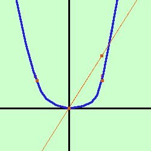

|
La parabola di equazione y= x2 e' la parabola con vertice nell'origine e concavita' verso l'alto  Troviamo prima le coordinate del vertice V Si tratta della parabola con vertice nell'origine, quindi:
Per disegnarla meglio aggiungiamo alcuni punti mediante un calcolo effettivo y = x2 sostituisco ad x dei valori e leggo i valori per y
Adesso congiungo i punti con una curva continua ed ottengo il grafico della parabola Traccio ora il grafico della retta y = 2x
|